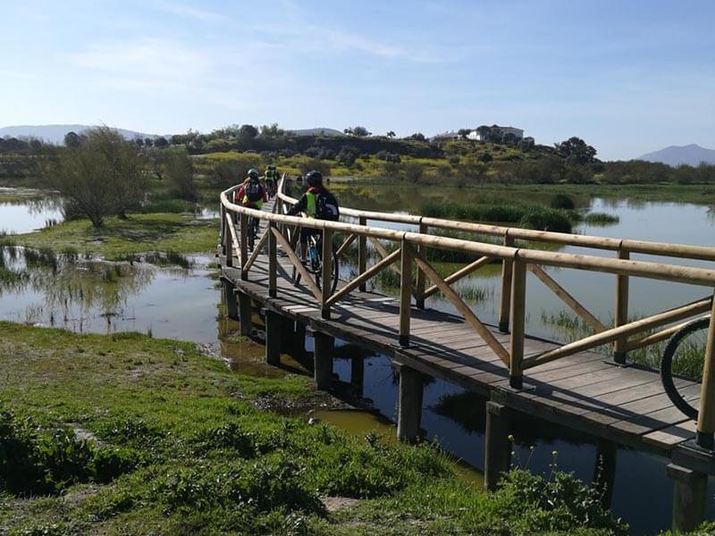
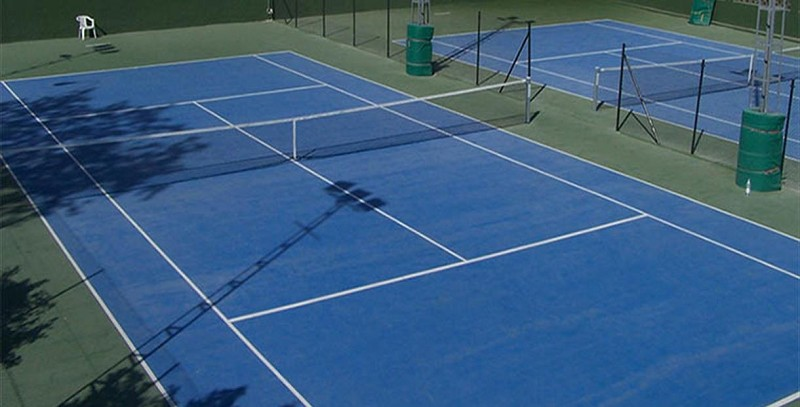

Laguna Fuente de Piedra
Una ruta en bici muy entretenida, con suaves pendientes, recorrido circular alrededor de la Laguna de Fuente de Piedra desde el Centro de Interpretación. Transcurre en su totalidad por el perímetro de la Laguna de fuente de Piedra, donde se pueden observar especies como el Flamenco Rosado, la Focha, la cigüeñuela, etc..
Club el Candado
El Real Club El Candado es un club situado en la capital de la provincia malagueña, en su zona este. Sus instalaciones cuentan con 7 pistas de pádel, 5 pistas de tenis, gimnasio, varias piscinas y cancha de baloncesto. Organizan cursos y eventos durante todo el año, destacando el evento orientado a los más pequeños llamado "Multideporte" celebrado durante los meses de julio y agosto.
En X-SPORTS buscamos que el deportista se sienta lo más cómodo y seguro a la hora de disfrutar
de su deporte favorito. Ofrecemos un asesoramiento personal con el cliente para ayudarle a encontrar
rápido lo que desea atentiendo concienzudamente sus necesidades.
Nuestro equipamiento deportivo es elaborado con material de primera calidad, pensando el confort
de quien lo use y asegurando una gran durabilidad del mismo.
Tenemos ofertas irresistibles, ¿A QUÉ ESPERAS?
PRODUCTOS DESTACADOS
Casco GIRO AETHER MIPS Azul mate

El casco GIRO Aether Mips es un modelo de alta gama para los ciclistas más exigentes que necesitan una protección óptima que les aporte una gran comodidad en carrera. Recuerda al casco Synthe por su forma y estilo, pero el Aether lo supera en ventilación y nivel aerodinámico. Sobre todo, destaca por la nueva tecnología Mips Spherical, una evolución de la membrana original de protección que en los últimos años han usado la mayoría de fabricantes de cascos.
Balón Uefa
Balón de fútbol oficial adidas de la próxima edición de la Liga de Naciones. Este balón, con el que jugarán las selecciones europeas, presente un diseño en color blanco con estampados dinámicos en 5 colores en el que destaca el color negro. Un balón para entrenar y conseguir llegar a lo más alto.
100% Speedcraft Gafas Alta, soft tact quicksand/smoke (2020)

El Speedcraft es una gafa de sol de la clase extra: Está disponible en numerosos colores y con varias gafas de alta calidad de Dalluz Sunoptics. La versión alta del Speedcraft tiene lentes altas y dos ranuras de ventilación en el borde inferior. La montura del gafas es flexible y por lo tanto robusta e insensible a los impactos. Esta versión del Speedcraft se entrega con cristales tintados, pero también se incluye un cristal transparente de repuesto.
NEOPRENO QUIKSILVER PROLOGUE 4/3MM

El Quiksilver Prologue 4/3mm es un neopreno duradero, con costuras invisibles y pegadas (GBS) que permiten mantener el calor. Lleva un sistema de cremallera trasera y cierre de cuello ajustable. Tiene rodilleras Ecto-Flex para un maxima proteccion para ti y para tu tabla.
adidas Predator 20.3 Messi Fg

Las zapatillas de fútbol adidas Predator 20.3 para chico vuelven con un diseño eléctrico en un color negro con parte frontal en color verde lima. Se trata de unas botas de tacos que cuentan con la tecnología Control Skin protege toda la carcasa ofreciendo máxima adherencia y control del balón. Así como un ajuste superior gracias a su calcetín en la zona del tobillo para toda la temporada.
TABLA DE SURF EVOLUTIVA MS EASY PONY
La tabla de surf MS Surfboards Easy Pony es una evolutiva, con un outline ancho desde la punta hasta la cola, para conseguir una tabla estable a la hora del take off que te ayude a progresar. Es una tabla voluminosa, con el centro de gravedad ligeramente desplazado hacia la punta, para facilitar la remada. Es una tabla de surf perfecta para los surfistas que salen de un curso o que ya han practicado con tabla de espuma tipo Softboard y que buscan su primera tabla.